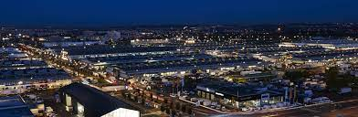

Freeze Corleone est né aux Lilas en Seine-Saint-Denis (Île-de-France), d'un père sénégalais et d'une mère italienne. Il passe ses premières années à Pantin, puis déménage à Dakar, capitale du Sénégal, où il rencontre les futurs membres de son collectif, le 667, également surnommé la Ligue des Ombres. Il a également vécu à Montréal, et a été influencé par la culture nord-américaine. Il raconte avoir travaillé en 2012 sur le M.I.N à Rungis.
À la recherche de la daillance, son premier projet, sort le 20 avril 2011. Il est composé de 16 titres, essentiellement ego-trip, avec de nombreuses références aux jeux vidéo, au basket, aux dessins animés et à la science fiction. Il y fait plusieurs dédicaces au Roi Heenok, rappeur québécois au style décalé, avec qui il collaborera 8 ans plus tard, et qu'il invitera sur son l'album LMF en 2020.

Il collabore souvent avec le groupe lyonnais Lyonzon, apparaissant à plusieurs reprises dans les clips solos de chaque artiste du groupe. En septembre 2018, il sort un clip avec deux membres du 667, Slim C 667 et Doc OVG 667, accompagnés de Mini Gouap, Ashe 22, Gouap, Kpri et Noma, membres de Lyonzon, sur le titre 669. Le nom du groupe lyonnais vient d'ailleurs des membres du groupe 667 qui surnomment la ville de Lyon Lyonzon quand ils s'y rendent.